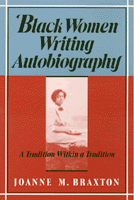

<body bgcolor="#FFFFFF" text="#000000" link="#0000FF" vlink="#CC0000" alink="#CC0000"><center><hr width="350" size="1" align="center" noshade>Argues for a corrective to both black and feminist literary criticism<hr width="350" size="1" align="center" noshade><p><a href="https://cdcshoppingcart.uchicago.edu/Cart/ChicagoBook.aspx?ISBN=9780877226390&&PRESS=temple" target="_top">Buy this book!</a> | <a href="https://cdcshoppingcart.uchicago.edu/Cart/Cart.aspx?PRESS=temple" target="_top">View Cart</a> | <a href="https://cdcshoppingcart.uchicago.edu/Cart/Cart.aspx?PRESS=temple" target="_top">Check Out</a></p><p></p></center><!--none//--><h1>Black Women Writing Autobiography</h1>
<H2>A Tradition Within a Tradition</H2>
<h3>Joanne M. Braxton</h3>
<P>cloth 0-87722-639-3 $39.50, Nov 89, <FONT COLOR=#990033>Out of Stock Unavailable</FONT>
<br>paper 0-87722-803-5 $31.95, Feb 91, <FONT COLOR=#990033>Available</FONT>
<BR> 240 pp
</P><BLOCKQUOTE><I>"In this illuminating study Joanne Braxton shows the continuity and tradition in the writing of Afra-American women. An important work for teachers and students of Literature, History, and Women's Studies."</I>
<BR>&#151<B>Gerda Lerner</B><I></I></BLOCKQUOTE>
<P>"As black American women, we are born into a mystic sisterhood, and we live our lives within a magic circle, a realm of shared language, reference, and allusion within the veil of our blackness and our femaleness. We have been as invisible to the dominant culture as rain; we have been knowers, but we have not been known."
<P>Joanne Braxton argues for a redefinition of the genre of black American autobiography to include the images of women as well as their memoirs, reminiscences, diaries, and journals&#151as a corrective to both black and feminist literary criticism. Beginning with slave narratives and concluding with modern autobiography, she deals with individual works as representing stages in a continuum and situates these works in the context of other writings by both black and white writers.
<P>Braxton demonstrates that the criteria used to define the slave narrative genre are inadequate for analyzing Harriet "Linda Brent" Jacobs's pseudonymously published <I>Incidents in the Life of a Slave Girl: Written by Herself</I> (1861). She examines "sass" as a mode of women's discourse and a weapon of self-defense, and she introduces the "outraged mother" as a parallel to the articulate hero archetype. Not even emancipation authorized black women to define themselves or address an audience. Late-nineteenth-century accounts in the form of confessional spiritual autobiographies, travelogue/adventure stories, and slave memoirs enabled such women as Jarena Lee, Rebecca Cox Jackson, Elizabeth Keckley, Susie King Taylor, as well as Harriet Tubman and Sojourner Truth to tell their own extraordinary stories and to shed light on the thousands of lives obscured by illiteracy and sexual and racial oppression. In her diaries, Charlotte Forten Grimk&#233, the gifted poet, epitomizes the problems faced by a well-educated, extremely articulate black woman attempting to find a public voice in America.
<P>Moving into the twentieth century, Braxton analyzes the memoir of Ida B. Wells, journalist and anti-lynching activist, and the work of Zora Neale Hurston and Era Bell Thompson. They represent the first generation of black female autobiographers who did not continually come into contact with former slaves and who transcended the essential struggle for survival that occupied earlier writings. For the contemporary black woman autobiographer, the quest for personal fulfillment is the central theme. Braxton concludes with Maya Angelou's <I>I Know Why the Caged Bird Sings</I> (1996), which represents the black woman of the 1960s who has found the place to recreate the self in her own image&#151the place all the others had been searching for.
<BR>&nbsp;<h2>Reviews</h2>
<p><I>"Braxton's book is scrupulously researched. She has been creative in finding resources and courageous in analyzing and interpreting her finds. This is the word of a diligent mind. The material is mountainous, yet the book sings. Braxton is a poet. Thank goodness."</I>
<br>&#151<b>Maya Angelou</b>
<P><I>"Joanne Braxton's essays on black women's autobiographies delineate and illuminate the personal and historical dimension of an important literary tradition. Emphasizing the distinct character of Afra-American women's experience and relations with each other, she ground their writing of their lives in the struggles and triumphs of the lives they actually led."</I>
<BR>&#151<B>Elizabeth Fox-Genovese</B>
<P><I>"In this compelling and lucid study examining the content, context, and continuum of black women autobiographers, Braxton clears the place for it in the curriculum: at the center of black and feminist studies."</I>
<BR>&#151<B>Paula Giddings</B>
<P><I>"This is the fullest and most sympathetic study of black American autobiographers I know. By paying close attention to private and public history, to social networks and literary kinships, to narrative structures and patterns of imagery, Braxton leads her readers to see the black woman 'at the center of her own [written] experiences.' At once scholarly and passionate, Braxton's critique will immediately secure her a place among the leading analysts of black American autobiography."</i>
<BR>&#151<B>Albert E. Stone</B>
<P><I>"A highly readable and original contribution to the important fields of Afro-American studies, feminist criticism, and autobiographical narrative."</i>
<BR>&#151<B>Elaine Showalter</B>
<P><I>"Rich in empathy and insight, Joanne M. Braxton's trailblazing study attends to both the textual and historical dimensions of a powerful literary inheritance. She brings to bear a keen sense of the departures and continuities of which any tradition consists; and an appreciation of the distinctive Afro-American dynamic between literary convention and a vernacular substrate. Braxton doesn't just read&#151she </I>listens<I>."</I>
<BR>&#151<B>Henry Louis Gates, Jr.</B>
<P><I>"Joanne Braxton makes a unique contribution to the scholarship of American autobiography. Her focus on the outraged mother as a figure of rebellion is a significant challenge to our conventional understanding of autobiographical acts."</I>
<BR>&#151<B>Hazel Carby</B>
<P><I>"This is the most inclusive and thoughtful literary history of black American women's autobiography in existence&#133It is not just a collection of essays; it is well knit together and displays multiple traditions as they evolved and are in the process of evolving still."</I>
<BR>&#151<B>William L. Andrews</B>
<P><I>"This book marks another milestone in the critical appraisal of American autobiographical writings. In tracing the evolution of a tradition of black women in autobiography in America, Braxton takes us on the first journey of this kind: the black American woman's search for a dignified, self-defining identity through the rejection of traditional female roles. This book sets the tone for future studies of black women's autobiographies."</I>
<BR>&#151<B>Nellie McKay</B>
<BR>&nbsp;<h2>Contents</h2><P>
<p>Acknowledgments
<br>A Tradition Within a Tradition
<br><b>Part I: Making a Way Out of No Way</b>
<br>1. Outraged Mother and Articulate Heroine: Linda Brent and the Slave Narrative Genre
<br> 2. Fugitive Slaves and Sanctified Ladies: Narratives of Vision and Power
<br><b>Part II: Emerging from Obscurity</b>
<br>3. A Poet's Retreat: The Diaries of Charlotte Forten Grimk&#233
<br>4. Crusader for Justice: Ida B. Wells
<br><b>Part III: Claiming the Afra-American Self</b>
<br>5. Motherless Daughters and the Quest for a Place: Zora Neale Hurston and Era Bell Thompson
<br> 6. A Song of Transcendence: Maya Angelou
<br><b>A Circle Closing and Expanding</b>
<br>References
<br>Index
</P><BR>&nbsp;<H2>About the Author(s)</H2>
<P><b>Joanne M. Braxton</b> is Cummings Professor of American Studies and English at the College of William and Mary and author of <I>Sometimes I think of Maryland</I>, a collection of poems.</P>
<BR><H2>Subject Categories</H2>
<p><A HREF="/tempress/women.html" TARGET="_top">Women's Studies</a>
<BR><A HREF="/tempress/african.html" TARGET="_top">African American Studies</a>
<BR><A HREF="/tempress/literature.html" TARGET="_top">Literature and Drama</a>
</p>
<p align="center"><a href="https://cdcshoppingcart.uchicago.edu/Cart/ChicagoBook.aspx?ISBN=9780877226390&&PRESS=temple" target="_top">Buy this book!</a> | <a href="https://cdcshoppingcart.uchicago.edu/Cart/Cart.aspx?PRESS=temple" target="_top">View Cart</a> | <a href="https://cdcshoppingcart.uchicago.edu/Cart/Cart.aspx?PRESS=temple" target="_top">Check Out</a></p><p><font face="Arial" size="1"><a href="copyright.html" onMouseOver="window.status='Web Copyright Policy';return true;" onMouseOut="window.status=''" title="Web Copyright Policy">&copy;</a> 2015 <a href="http://www.temple.edu" target="new" onMouseOver="window.status='Link to Temple University home page';return true;" onMouseOut="window.status=''" title="Link to Temple University home page">Temple University</a>. All Rights Reserved. http://www.temple.edu/tempress/titles/439_reg.html</font></p>